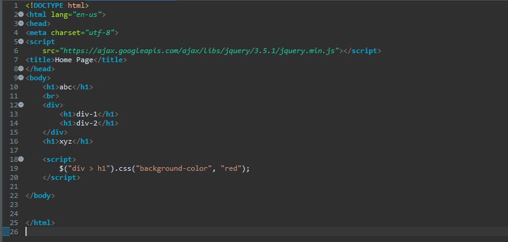

1. In jQuery terminology, what is the difference
between the "jQuery function" and the "jQuery object"?
The jQuery library provides the jQuery function, which lets you
select elements using CSS selectors. For example:
var listItems = $('li'); Here $ is for the jQuery function.
When the jQuery function is envoked with a CSS
selector, it will return a jQuery Object wrapping all the elements
that math the selector. jQUery Objects behaves both like an
objects and an arrays. For example: var divs =
$("div"); for (i=0 ; i< divs.length; i++){
console.log(divs[i])};
2. Write jQuery code to find all h1 elements
that are children of a div element and make their background color
red.
Solution:

3. Use a jQuery method to insert the text "YES!"
at the end of the element.